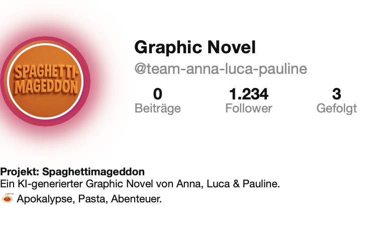

graphic novel
Reflektion
Für das abschließende Projekt dieses Semesters beschäftigten wir uns mit der Erstellung einer Graphic Novel unter Verwendung von KI-gestützter Bildgenerierung. Die Vorbereitung bestand zunächst darin, verschiedene Programme zur KI-Bildgenerierung kennenzulernen, darunter unter anderem ChatGPT, Gemini und MidJourney. Ziel war es, die jeweiligen Stärken und Schwächen der Tools zu vergleichen, Erfahrungen auszutauschen und als Gruppe eine Entscheidung darüber zu treffen, welches Programm für die Umsetzung unseres Projekts am geeignetsten ist.
Danach lag der Fokus auf der konzeptionellen Entwicklung. Dazu gehörte das Entwickeln einer Geschichte, als auch die Wahl eines visuellen Stils. Ein kleines Experiment innerhalb des Projekts bestand darin, das Storytelling weitgehend in die Hände der KI zu legen. Ausgangspunkt war ein einzelnes Szenenbild, die Mitglieder unserer Gruppe an einem Tisch sitzend, aus dem die KI die Geschichte fortlaufend generierte. Dabei war es notwendig, gelegentlich gezielten Input zu geben, um eine klassische Spannungsstruktur sicherzustellen. Diese Eingriffe haben wir bewusst minimal gehalten, um den KI-generierten Charakter der Narration zu bewahren, aber gleichzeitig auch eine nachvollziehbare Geschichte zu gewährleisten. Für die Präsentation unseres Graphic Novels haben wir ein Instagram-Story-Format gewählt, das die Interaktion der Nutzer*innen nachahmt. Die Geschichte kann so durch Rechts- und Linksklicks navigiert werden.
Bei der technischen Umsetzung fiel auf, dass die Bildgenerierung über ChatGPT zwar schnelle Ergebnisse lieferte, jedoch konstante Farbstiche (insbesondere Brauntöne) und kleinere Bildfehler auftraten. Diese haben wir anschließend in Photoshop nachbearbeitet, um die Ästhetik zu verbessern und die Konsistenz des visuellen Stils sicherzustellen. Rückblickend war das Projekt sehr lehrreich. Ich habe ein tieferes Verständnis dafür gewonnen, wie KI-gestütztes Storytelling funktioniert, welche Möglichkeiten und Grenzen es bei der Bildgenerierung gibt und wie wichtig gezieltes Prompting sowie minimale Eingrife in den Erzählprozess sind.